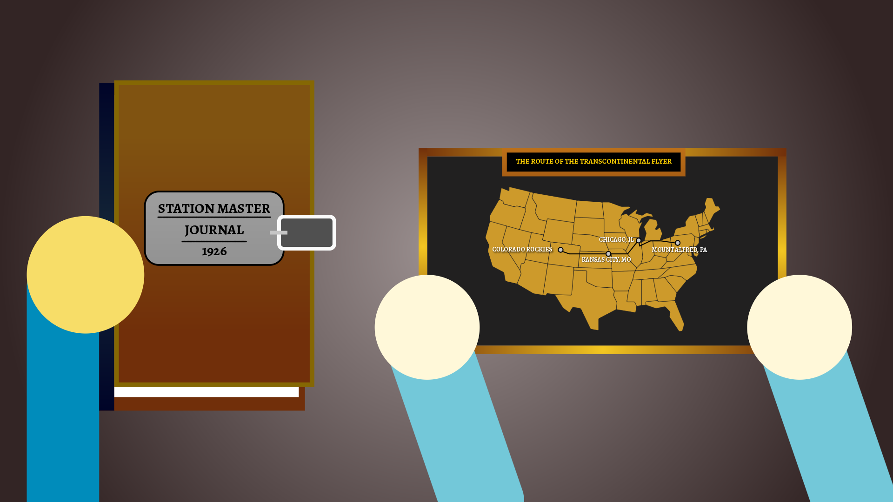

The Mystery Begins
For more than one hundred years, the people of Mount Alfred have whispered about a train that vanished without a trace.
Now, a new generation is about to uncover the truth.
Scene 1 — Mount Alfred Station

Atmosphere: A cold autumn afternoon. Wind moves through the abandoned station while an old railroad sign creaks above the platform.
Felix steps onto the deserted platform and looks at the abandoned station.
Felix: "I've never seen a station this old."
Fred: "Are you sure we're supposed to be here?"
Rich: "Look at that sign. It says something about a lost train."
The three friends have heard stories about the mysterious locomotive that disappeared more than a century ago.
Scene 2 — The Forgotten Journal

Atmosphere: Dust fills the abandoned station. Sunlight shines through cracked windows and illuminates an old wooden desk.
While searching the station master's office, Felix discovers a hidden compartment underneath the desk.
Rich: "Wait! There's something underneath this drawer."
Felix: "It's a journal."
Fred: "And there's a map inside it."
Felix: "Someone wrote something on the last page."
Clue Discovered
"Follow the whistle where the mountain sleeps."
Scene 3 — Into the Tunnel

Atmosphere: The temperature drops as the friends enter the tunnel. Water drips from the ceiling and their footsteps echo through the darkness.
The map leads the group toward an abandoned railroad tunnel beneath the mountain.
Fred: "This place gives me the creeps."
Rich: "Look at the wall."
Felix: "Those symbols match the ones on the map."
Rich: "Did anyone else hear that?"
Somewhere deep inside the mountain, a distant train whistle echoes through the tunnel.
Scene 4 — The Conductor's Secret

Atmosphere: Later that evening, the friends visit an old railroad conductor. His cabin is filled with photographs, lanterns, railroad tools, and newspaper clippings.
Mr. McGuffin has spent his life studying the history of Black Ridge's railroad.
Mr. McGuffin: "My grandfather told me the train wasn't destroyed."
Felix: "Then what happened to it?"
Mr. McGuffin: "He believed someone hid it inside the mountain."
Fred: "Why would anyone hide an entire train?"
Mr. McGuffin: "That's the question nobody has ever answered."
Mr. McGuffin reaches into an old wooden box and removes a small brass key.
Clue Discovered
A mysterious brass key marked with the year number 1926.
Mr. McGuffin: "If you're going after the train, you'll need this."
Felix: "What does it unlock?"
Mr. McGuffin: "You'll know when you find the door."
Scene 5 — The Hidden Cave

Atmosphere: The tunnel opens into a huge underground chamber. A beam of sunlight shines through a crack in the mountain.
The friends follow the final markings on the map until they reach an enormous stone door.
Rich: "There's a keyhole!"
Felix: "The brass key."
Fred: "Go ahead."
Felix inserts the key.
CLICK.
The ancient door slowly opens.
Felix: "No way..."
Rich: "We found it."
Fred: "The Lost Train."
Inside the chamber sits an enormous steam locomotive, covered in dust and untouched for generations.
Scene 6 - A New Beginning

Atmosphere: Alfred, the locomotive was restored by magic and inagurated its journey en route to Mount Alfred, Pennsylvania.
The discovery changes Mount Alfred forever. The town restores finally has a true passemger rail service and begins its inagurated operations that is dedicated to its railroad history.
Mayor: "You didn't just find a train. You found a piece of Mount Alfred's history."
Felix: "We couldn't have done it without everyone who helped us."
Fred: "I still can't believe it was actually there."
Rich: "So... what mystery are we solving next?"
Felix looks toward the restored locomotive.
The mystery of the Lost Train has finally been solved.
Your Investigation Continues
You've discovered the story. Now it's time to prove that you've been paying attention.